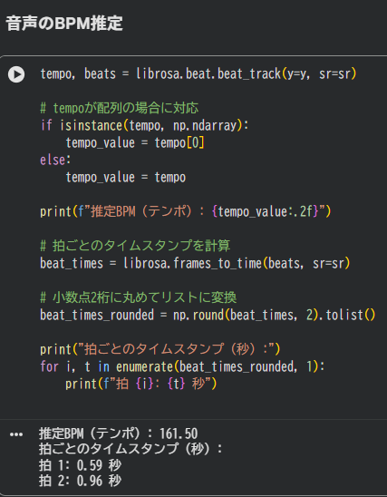
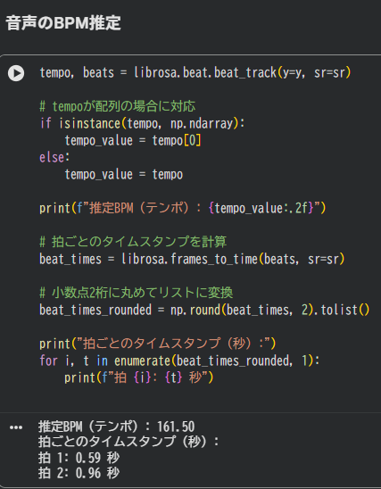
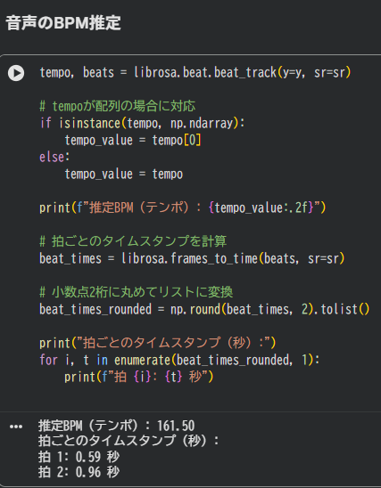

音声解析プログラム
リンク: Google Colabで開く
概要:
このプログラムは、アップロードした音声ファイルを解析して可視化するためのツールです。
アップロードされた音声データを基に、波形やスペクトログラムを表示し、曲のテンポ（BPM）を推定できます。
スクリーンショット

 

リンク: Google Colabで開く
概要:
このプログラムは、アップロードした音声ファイルを解析して可視化するためのツールです。
アップロードされた音声データを基に、波形やスペクトログラムを表示し、曲のテンポ（BPM）を推定できます。
